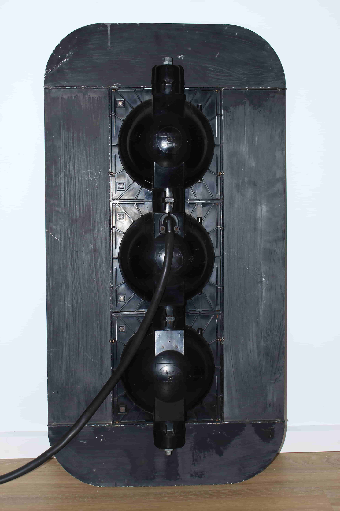
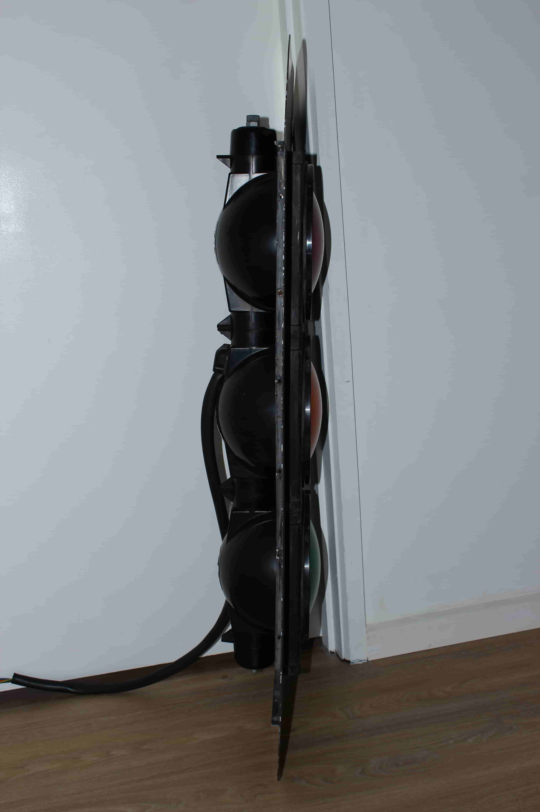
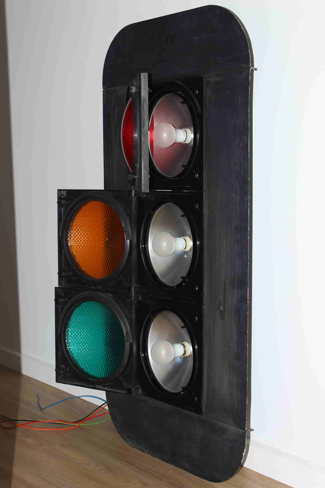

{kind=link}
{kind=link}
{kind=link}
Due to a design flaw, the top door of this light can't be opened fully - Not sure if this defect applies to other lights of this kind.
I believe other lights of this type have a more glossy reflector, unlike the one pictured.
Compared to its 12" counterpart, Aldridge Group 8" incandescent signals are very rare.
The only known installation currently in use is at the Charlton Traffic School in Victoria.
The only known former installation is at the intersection of James Ruse Dr/Hassall St, Rosehill, NSW - Most likely there were more installations of these lights that weren't documented.
These lights are made of plastic and have a bulbous back. They use 240vac bulbs with no transformer inside. The metal target board is also a unique design.
| Front view | Back view | Side view | Internal view |
|---|---|---|---|
|
 |  |  |
| Above images from my own collection. Due to a design flaw, the top door of this light can't be opened fully - Not sure if this defect applies to other lights of this kind. I believe other lights of this type have a more glossy reflector, unlike the one pictured. |
|||